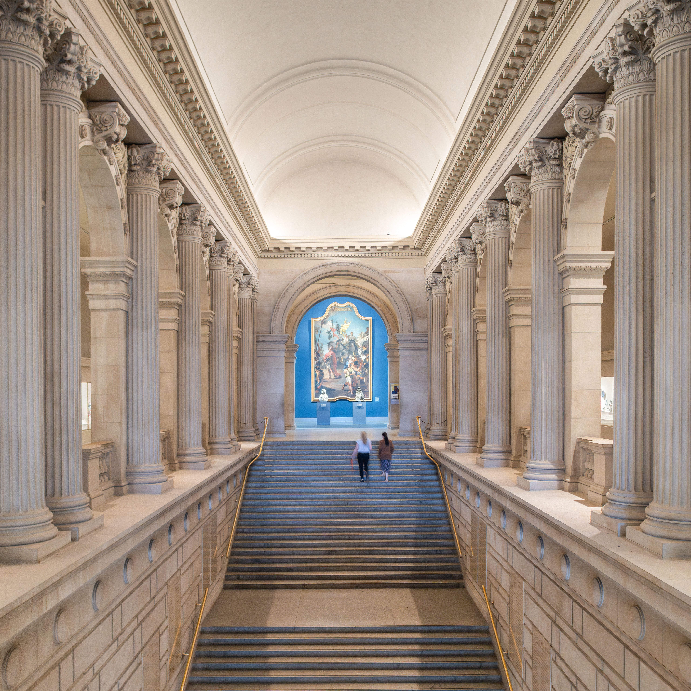
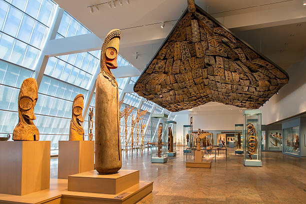
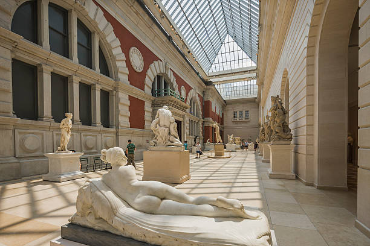
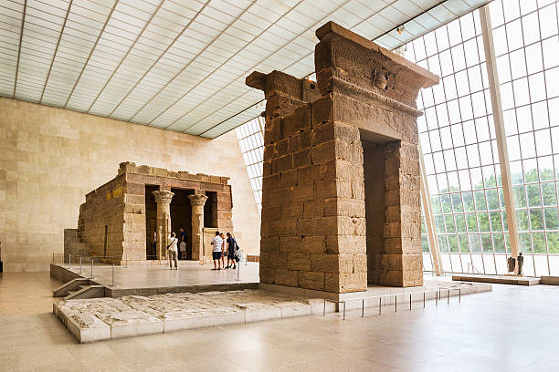

The Met presents over 5,000 years of art from around the world for everyone to experience and enjoy. Its collection includes masterpieces from ancient Egypt, classical antiquity, and nearly every corner of the globe.

The Metropolitan Museum of Art of New York City, commonly referred to as "The Met", is the largest art museum in the Americas and one of the most important cultural institutions in the world. Its permanent collection contains more than two million works, representing over 5,000 years of human creativity.
The Met was founded in 1870 by a group of American citizens—including businessmen, artists, and philanthropists—with the goal of bringing art and art education to the American people. The Museum first opened in 1872 at 681 Fifth Avenue, before moving to its current location in Central Park in 1880. Over the decades, The Met has expanded through numerous additions, making it one of the most iconic landmarks of New York City.
The Met’s collection spans art and artifacts from nearly every corner of the globe. It includes ancient Egyptian treasures, Greek and Roman sculpture, European paintings from the Renaissance to the modern era, Islamic art, African and Oceanic art, and an impressive collection of musical instruments, costumes, and decorative arts.
The main building of The Met, located along Fifth Avenue, is one of the largest art galleries in the world. Designed in a mix of Beaux-Arts and neoclassical styles, it has undergone several renovations to accommodate the growing collection. The museum also includes The Met Cloisters, a branch dedicated to the art and architecture of medieval Europe, located in Fort Tryon Park in northern Manhattan.
The mission of The Met is to connect all people to creativity, knowledge, and ideas through art. Every year, millions of visitors from around the world experience the museum’s exhibitions, research, and educational programs, making The Met a place where art truly comes alive.


